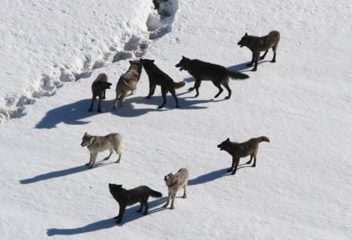
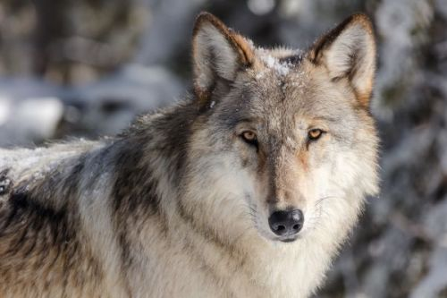

Why wolves were reintroduced
Gray wolves were reintroduced to Yellowstone in 1995 after decades of absence. Their return helped rebalance predator-prey relationships and changed browsing patterns in parts of the park.
What changed after reintroduction
- Elk behavior shifted in some valleys and stream corridors.
- Willow and aspen regeneration improved in selected areas.
- Scavenger species benefited from carcasses in winter months.
Where visitors may observe wolves
The Lamar Valley is one of the best-known locations for wolf watching, especially during early morning and evening.


Plan your wolf-watching trip
Bring binoculars or a spotting scope, dress for changing weather, and keep a safe distance from wildlife.
Official park info: Yellowstone National Park (NPS)
Wolf biology and research updates